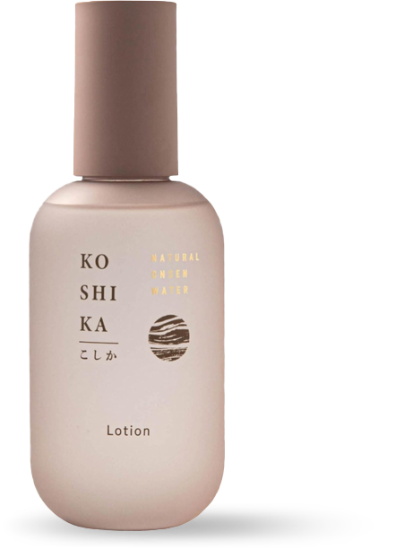

'KOSHIKA'는 온천수를 주요 성분으로 한 화장품 브랜드입니다. 이 프로젝트에서 저는 팜플렛, 웹, 모바일 디자인 제작을 맡았었습니다. 여성고객을 주 타킷으로 한 제품이니만큼 따뜻하고 부드러운 인상을 줄수 있는 채도 낮은 인디핑크를 메인 컬러로 사용 하였습니다. 채도가 낮은 핑크는 채도가 높은 핑크보다 조금 더 세련 된 느낌과 매력적인 느낌을 줄 수 있다고 생각했기 때문입니다. 팜플렛은 총 여섯면으로 구성 되어 있으며 제품소개, 가격정보, 설문조사 및 인스타그램 QR코드로 구성 되어 있으며 각 면은 정보의 중요도와 읽는 흐름을 최대한 고려하여 제작 할 수 있도록 하였습니다.